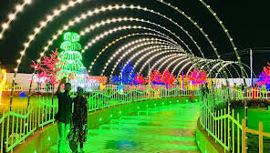

Glow Garden
Glow Garden in Siddipet is a popular attraction known for its dazzling light displays and interactive exhibits. It offers visitors a unique experience with illuminated sculptures, themed areas, and pathways that create a magical ambiance.
Location: Siddipet, Telangana, India
Ticket Price: INR 200 per person (approximate)
Transportation: Accessible by road, located near major bus routes.